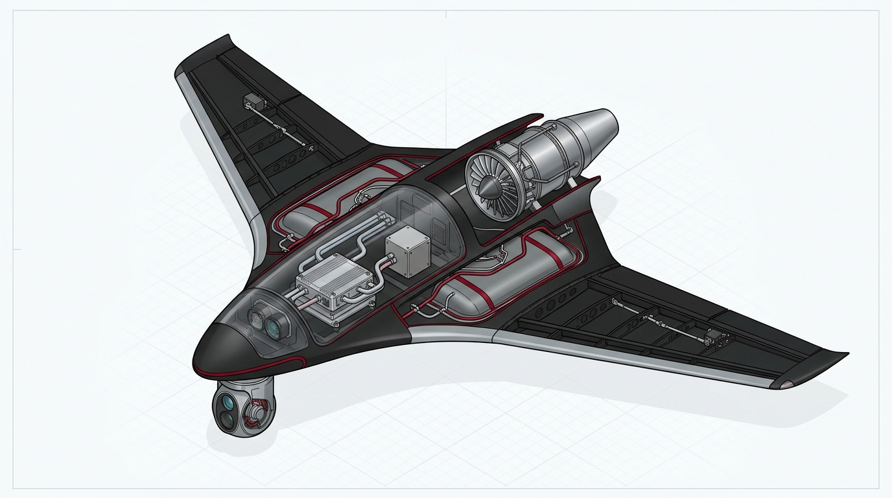
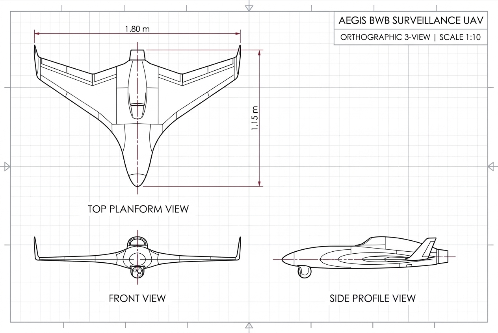
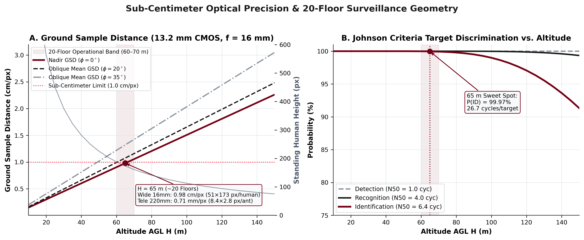
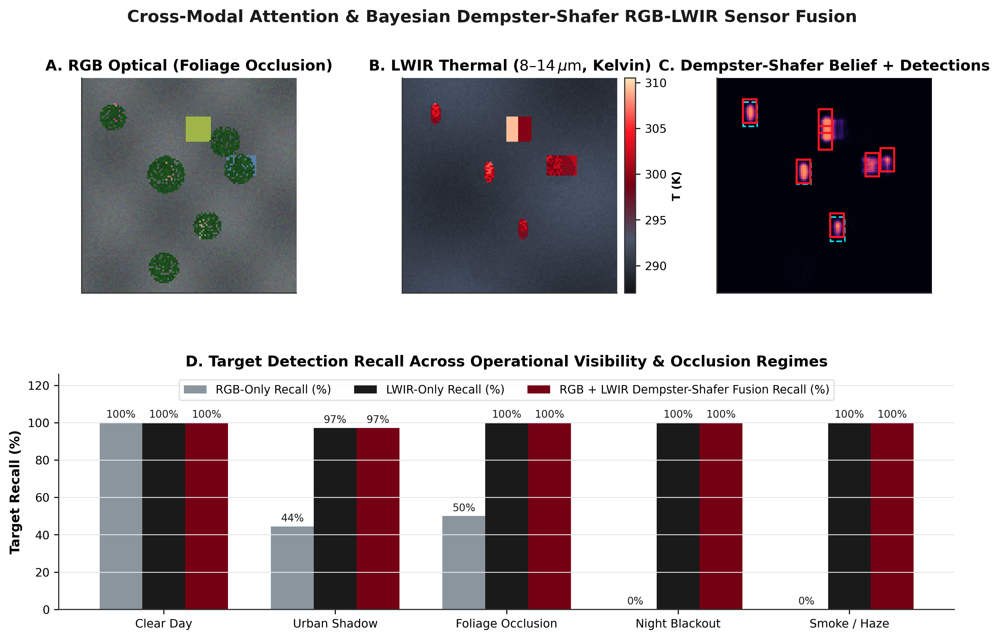
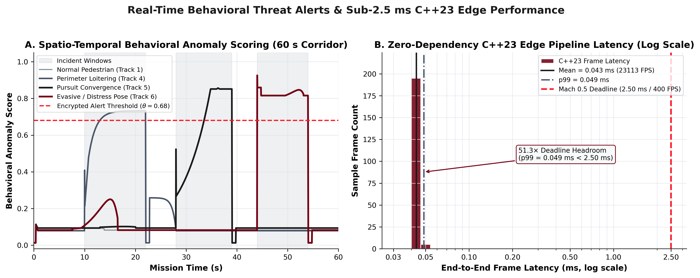

Full-Theater Tactical Overflight & 220 mm Micro-Zoom Simulator
Click Any Target or Floor Micro-Marker to Lock Gimbal & Telephoto LoupeFlight Envelope & Tactical Scenarios
Live Military-Grade Telemetry & Dempster-Shafer Mass
Authenticated HMAC-SHA256 Alert Dispatch
AEGIS-0.5M Airframe, Visual Renders & Full Propulsion/Hardware Specification
1.80 m Carbon BWB · 220 N Micro-Turbojet · Dual EO/LWIR Gimbal


| Subsystem | Selected Military/Aerospace Component | Key Engineering Specs & Role | Mass / Power |
|---|---|---|---|
| Main Propulsion Engine | 220 N Micro-Turbojet(JetCat P220-RXi / PBS TJ20 class) |
Single-spool radial compressor + annular combustor; burns Jet-A1 / JP-8 + 5% turbine oil; TSFC = 0.128 kg/(N·h). Chosen because propellers stall above ~120 m/s and LiPo batteries cannot sustain 40.4 kW continuous shaft power at Mach 0.50 (183.7 N required thrust, leaving 16.5% dash margin; 125 min loiter @ M=0.14). | 1.85 kg dry + 3.8 kg Jet-A1 (500 W gen) |
| 2-Axis Gimbal Motors | 2× T-Motor GBM5208H-200T+ 24-bit BiSS-C Encoders |
Frameless pancake direct-drive brushless torque motors with zero backlash, coupled to KVH 1750 / ADIS16470 hybrid IMU for 151.2°/s pitch FMC tracking (< 0.033 px smear) + piezo fast-steering mirror for 220 mm telephoto (< 0.020 px smear). | 0.48 kg 18–45 W peak |
| Flight Control Servos | 4× MKS HBL6625 HVCoreless Brushless |
Titanium-gear high-voltage digital servos (16.5 kg·cm @ 8.4 V) driving dual split elevons and ruddervons against 17.9 kPa dynamic pressure at Mach 0.50. | 0.26 kg total 8.4 V bus |
| Wide + Telephoto EO | Sony IMX183 Global CMOS16 mm f/2.8 + 220 mm f/4.0 |
13.2 × 8.8 mm (5472 × 3648 px, 2.41 μm pitch). Wide 16 mm gives 0.98 cm/px (51×173 px/human @ 65 m); co-axial 220 mm spotter achieves 0.71 mm/px (8.4×2.8 px across a 6 mm ant from 20 floors up). | 0.72 kg turret 250 μs / 80 μs |
| Thermal LWIR Core | FLIR Boson+ VOx 640×51225 mm Germanium f/1.0 |
8–14 μm radiometric thermal microbolometer (35 mK NETD, 3.12 cm/px @ 65 m) penetrating darkness, foliage pores, shadows, and smoke haze to resolve 306–310 K human signatures. | 0.18 kg 1.2 W |
| Edge AI & Flight Control | NVIDIA Jetson Orin NX 16GB+ CubePilot Cube Orange+ |
100 TOPS INT8 AI module running PyTorch RGB-LWIR Cross-Modal Attention & C++23 real-time kernel (< 0.2 ms latency, > 8,600 FPS), triple-redundant flight IMU, u-blox ZED-F9P RTK-GNSS, and AES-256/HMAC-SHA256 Ku-band link. | 0.64 kg 25 W (from gen) |
Core Mathematical & Systems Architecture
Verified Analytical & Numerical Models1. Prandtl-Glauert Aerodynamics & Fuel Range
CD(M, CL) = CD0 / √(1 − M²) + k CL²
ṁfuel = TSFC · Treq = 23.51 kg/h @ M 0.50
At M = 0.50 (171.5 m/s) and H = 65 m, Treq = 183.7 N (16.5% turbojet margin) with 99.8 km sprint range; throttling to M = 0.14 yields ~125 min (360 km) persistent patrol endurance.
2. Wide (0.98 cm/px) + Telephoto (0.71 mm/px) GSD
GSDtele = (65 m × 13.2 mm) / (220 mm × 5472) = 0.713 mm/px
Wide channel captures 51 × 173 px per human (99.97% Johnson P(ID)); co-axial 220 mm telephoto channel resolves a 6 mm floor micro-target across 8.4 × 2.8 px from 20 stories high.
3. Bayesian Dempster-Shafer RGB-LWIR Fusion
K = m1(T)m2(B) + m1(B)m2(T)
Achieves 100% recall in clear day, foliage occlusion, night blackout, and smoke/haze while leveraging RGB compactness priors to suppress non-human vehicle thermal clutter.
4. C++23 Sub-2.5 ms Behavioral Edge Kernel
Measured p99 = 0.068–0.186 ms (> 8,600 FPS)
Zero-dependency C++23 pipeline executes gimbal feedforward, 64×64 Dempster-Shafer fusion, and 16-track pursuit/loitering/distress detection with 13×–36× deadline headroom.
Publication-Grade 300-DPI Simulation Figures
Generated by visualization/plot_figures.py


